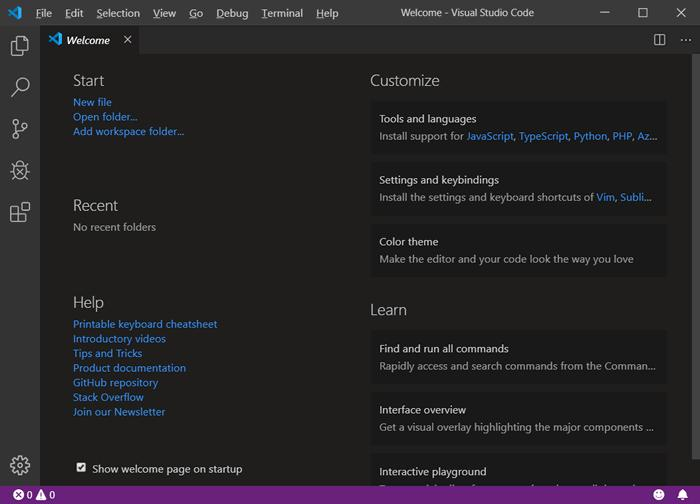

核心流水线完整实操

01 澄清模糊需求 · 锁定边界
$deep-interview "重构项目权限模块，实现RBAC系统"
AI主动发起深度反问，精准锁定需求边界，自动生成可落地的标准化需求文档，消除理解偏差。
02 生成架构方案 · 人工确认
$ralplan "生成完整技术方案，待审核通过后执行"
架构Agent基于代码图谱与需求自动生成实施计划，方案必须经人工审核确认，确保技术路线正确。
03 智能执行 · 灵活调度
$ralph (串行) / $team 3 (3-Agent并行开发)
全程自动化运行，支持断点续跑(omx resume)，多智能体并行模式可显著提升开发与交付效率。

沉浸式命令行交互终端，指令即代码，所见即所得的开发体验。